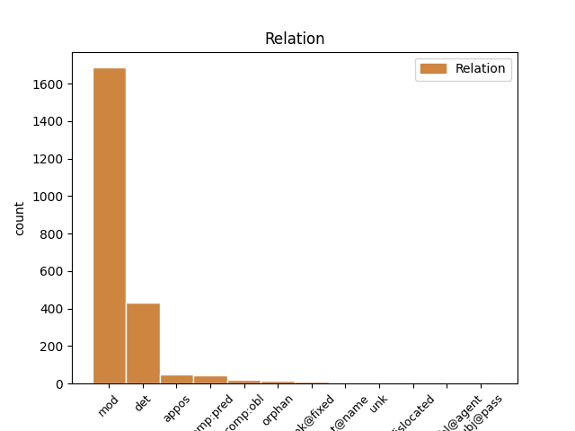
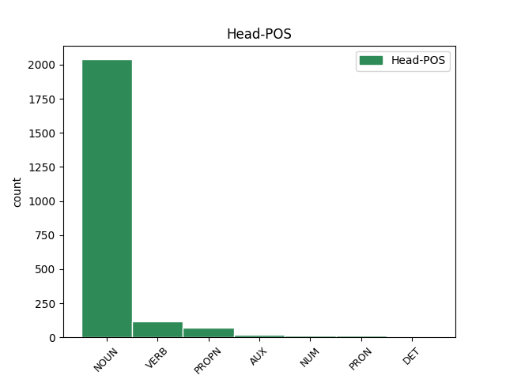
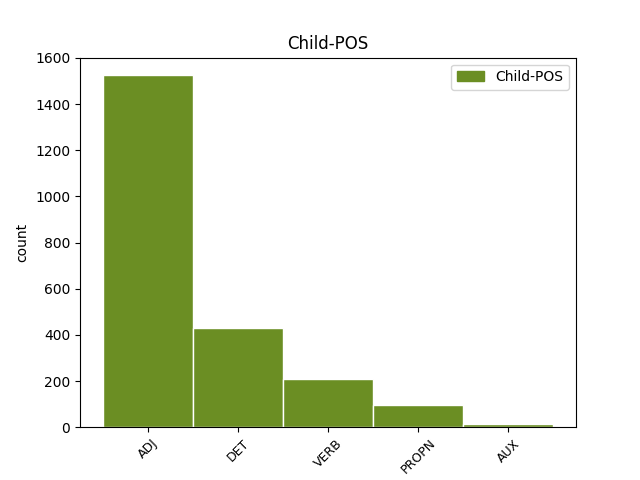

Distribution of features within this leaf



Agreement Rules sorted by frequency.
- When the dependent token is the modifer(mod) of the head token, and the head token is NOUN and the dependent token is ADJ.
1 си _ _ _ _ 0 _ _ _
2 же _ _ _ _ 0 _ _ _
3 писана _ _ _ _ 0 _ _ _
4 бꙑшѧ _ _ _ _ 0 _ _ _
5 да _ _ _ _ 0 _ _ _
6 вѣрѫ _ _ _ _ 0 _ _ _
7 имете _ _ _ _ 0 _ _ _
8 ѣко _ _ _ _ 0 _ _ _
9 и҃с _ _ _ _ 0 _ _ _
10 естъ _ _ _ _ 0 _ _ _
11 х҃ъ _ _ _ _ 0 _ _ _
12 с҃нъ сꙑнъ NOUN Nb Case=Nom|Gender=Masc|Number=Sing 0 _ _ _
13 б҃жіи божии ADJ A- Case=Nom|Degree=Pos|Gender=Masc|Number=Sing|Strength=Strong 12 mod _ ref=JOHN_20.31
14 ꙇ _ _ _ _ 0 _ _ _
15 да _ _ _ _ 0 _ _ _
16 вѣрѫѭште _ _ _ _ 0 _ _ _
17 живота _ _ _ _ 0 _ _ _
18 вѣчънааго _ _ _ _ 0 _ _ _
19 имате _ _ _ _ 0 _ _ _
20 въ _ _ _ _ 0 _ _ _
21 імѧ _ _ _ _ 0 _ _ _
22 его _ _ _ _ 0 _ _ _
1 мънога _ _ _ _ 0 _ _ _
2 же _ _ _ _ 0 _ _ _
3 ина инъ DET Px Case=Acc|Gender=Neut|Number=Plur 4 det _ ref=JOHN_20.30
4 знамениѣ знамениѥ NOUN Nb Case=Acc|Gender=Neut|Number=Plur 0 _ _ _
5 сътвори _ _ _ _ 0 _ _ _
6 и҃с _ _ _ _ 0 _ _ _
7 прѣдъ _ _ _ _ 0 _ _ _
8 оученикꙑ _ _ _ _ 0 _ _ _
9 своими _ _ _ _ 0 _ _ _
10 ѣже _ _ _ _ 0 _ _ _
11 не _ _ _ _ 0 _ _ _
12 сѫтъ _ _ _ _ 0 _ _ _
13 писана _ _ _ _ 0 _ _ _
14 въ _ _ _ _ 0 _ _ _
15 кънигахъ _ _ _ _ 0 _ _ _
16 сихъ _ _ _ _ 0 _ _ _
1 тъгда _ _ _ _ 0 _ _ _
2 же _ _ _ _ 0 _ _ _
3 вьниде _ _ _ _ 0 _ _ _
4 ꙇ _ _ _ _ 0 _ _ _
5 дроугꙑ _ _ _ _ 0 _ _ _
6 оученикъ оученикъ NOUN Nb Case=Nom|Gender=Masc|Number=Sing 0 _ _ _
7 пришедꙑ прити VERB V- Case=Nom|Gender=Masc|Number=Sing|Strength=Weak|Tense=Past|VerbForm=Part|Voice=Act 6 mod _ ref=JOHN_20.8
8 прѣжде _ _ _ _ 0 _ _ _
9 къ _ _ _ _ 0 _ _ _
10 гробоу _ _ _ _ 0 _ _ _
11 ꙇ _ _ _ _ 0 _ _ _
12 видѣ _ _ _ _ 0 _ _ _
13 и _ _ _ _ 0 _ _ _
14 вѣрова _ _ _ _ 0 _ _ _
1 еда _ _ _ _ 0 _ _ _
2 тꙑ _ _ _ _ 0 _ _ _
3 болеи _ _ _ _ 0 _ _ _
4 еси _ _ _ _ 0 _ _ _
5 о҃тца отьць NOUN Nb Case=Gen|Gender=Masc|Number=Sing 0 _ _ _
6 нашего _ _ _ _ 0 _ _ _
7 авраама авраамъ PROPN Ne Case=Gen|Gender=Masc|Number=Sing 5 appos _ ref=JOHN_8.53
8 ꙇже _ _ _ _ 0 _ _ _
9 оумьрѣтъ _ _ _ _ 0 _ _ _
1 г҃ла _ _ _ _ 0 _ _ _
2 емоу _ _ _ _ 0 _ _ _
3 единъ _ _ _ _ 0 _ _ _
4 отъ _ _ _ _ 0 _ _ _
5 оученикъ _ _ _ _ 0 _ _ _
6 его _ _ _ _ 0 _ _ _
7 аньдрѣа _ _ _ _ 0 _ _ _
8 братръ братръ NOUN Nb Case=Nom|Gender=Masc|Number=Sing 0 _ _ _
9 симона симонъ PROPN Ne Case=Gen|Gender=Masc|Number=Sing 8 mod _ ref=JOHN_6.8
10 петра _ _ _ _ 0 _ _ _
1 вьсѣкѫ _ _ _ _ 0 _ _ _
2 разгѫ _ _ _ _ 0 _ _ _
3 не _ _ _ _ 0 _ _ _
4 творѧштѫѭ _ _ _ _ 0 _ _ _
5 плода _ _ _ _ 0 _ _ _
6 ꙇзъметъ _ _ _ _ 0 _ _ _
7 ѭ _ _ _ _ 0 _ _ _
8 ꙇ _ _ _ _ 0 _ _ _
9 вьсѣкѫ вьсꙗкъ ADJ A- Case=Acc|Degree=Pos|Gender=Fem|Number=Sing|Strength=Strong 10 mod _ ref=JOHN_15.2
10 творѧштѫ творити VERB V- Case=Acc|Gender=Fem|Number=Sing|Strength=Strong|Tense=Pres|VerbForm=Part|Voice=Act 0 _ _ _
11 плодъ _ _ _ _ 0 _ _ _
12 отрѣбитъ _ _ _ _ 0 _ _ _
13 ѭ _ _ _ _ 0 _ _ _
14 да _ _ _ _ 0 _ _ _
15 плодъ _ _ _ _ 0 _ _ _
16 болии _ _ _ _ 0 _ _ _
17 сътворитъ _ _ _ _ 0 _ _ _
1 аще _ _ _ _ 0 _ _ _
2 бисте _ _ _ _ 0 _ _ _
3 слѣпи слѣпъ ADJ A- Case=Nom|Degree=Pos|Gender=Masc|Number=Plur|Strength=Strong 4 comp:pred _ ref=JOHN_9.41
4 бꙑли бꙑти AUX V- Aspect=Res|Case=Nom|Gender=Masc|Number=Plur|Strength=Strong|VerbForm=Part|Voice=Act 0 _ _ _
5 не _ _ _ _ 0 _ _ _
6 бисте _ _ _ _ 0 _ _ _
7 имѣли _ _ _ _ 0 _ _ _
8 грѣха _ _ _ _ 0 _ _ _
1 блажени _ _ _ _ 0 _ _ _
2 не _ _ _ _ 0 _ _ _
3 видѣвъ. видѣти VERB V- Case=Nom|Gender=Masc|Number=Plur|Strength=Weak|Tense=Past|VerbForm=Part|Voice=Act 0 _ _ _
4 шеи шеи VERB V- Case=Nom|Gender=Masc|Number=Plur|Strength=Weak|Tense=Past|VerbForm=Part|Voice=Act 3 unk@fixed _ ref=JOHN_20.29
5 ꙇ _ _ _ _ 0 _ _ _
6 вѣровавъшеи _ _ _ _ 0 _ _ _
1 самъ самъ DET Pd Case=Nom|Gender=Masc|Number=Sing 3 det _ ref=JOHN_4.44
2 бо _ _ _ _ 0 _ _ _
3 и҃съ исоусъ PROPN Ne Case=Nom|Gender=Masc|Number=Sing 0 _ _ _
4 съвѣдѣтельствова _ _ _ _ 0 _ _ _
5 ѣко _ _ _ _ 0 _ _ _
6 п҃ркъ _ _ _ _ 0 _ _ _
7 въ _ _ _ _ 0 _ _ _
8 своемь _ _ _ _ 0 _ _ _
9 отъчъствии _ _ _ _ 0 _ _ _
10 не _ _ _ _ 0 _ _ _
11 иматъ _ _ _ _ 0 _ _ _
12 чьсти _ _ _ _ 0 _ _ _
1 по _ _ _ _ 0 _ _ _
2 сихъ _ _ _ _ 0 _ _ _
3 иде _ _ _ _ 0 _ _ _
4 и҃съ _ _ _ _ 0 _ _ _
5 на _ _ _ _ 0 _ _ _
6 онъ _ _ _ _ 0 _ _ _
7 полъ _ _ _ _ 0 _ _ _
8 морѣ _ _ _ _ 0 _ _ _
9 галилѣѩ галилеꙗ PROPN Ne Case=Gen|Gender=Fem|Number=Sing 0 _ _ _
10 таверьѣдъскꙑ тивериꙗдьскъ ADJ A- Case=Gen|Degree=Pos|Gender=Fem|Number=Sing|Strength=Strong 9 mod _ ref=JOHN_6.1
1 г҃лѭ _ _ _ _ 0 _ _ _
2 бо _ _ _ _ 0 _ _ _
3 вамъ _ _ _ _ 0 _ _ _
4 ѣко _ _ _ _ 0 _ _ _
5 еште _ _ _ _ 0 _ _ _
6 писаное пьсати VERB V- Case=Nom|Gender=Neut|Number=Sing|Strength=Weak|Tense=Past|VerbForm=Part|Voice=Pass 0 _ _ _
7 се сь DET Pd Case=Nom|Gender=Neut|Number=Sing 6 det _ ref=LUKE_22.37
8 подобаатъ _ _ _ _ 0 _ _ _
9 да _ _ _ _ 0 _ _ _
10 съконьчаатъ _ _ _ _ 0 _ _ _
11 сѧ _ _ _ _ 0 _ _ _
12 о _ _ _ _ 0 _ _ _
13 мьнѣ _ _ _ _ 0 _ _ _
14 еже _ _ _ _ 0 _ _ _
1 Тома ѳома PROPN Ne Case=Nom|Gender=Masc|Number=Sing 0 _ _ _
2 же _ _ _ _ 0 _ _ _
3 единъ _ _ _ _ 0 _ _ _
4 отъ _ _ _ _ 0 _ _ _
5 обою _ _ _ _ 0 _ _ _
6 на _ _ _ _ 0 _ _ _
7 десѧте _ _ _ _ 0 _ _ _
8 нарицаемꙑ нарицати VERB V- Case=Nom|Gender=Masc|Number=Sing|Strength=Weak|Tense=Pres|VerbForm=Part|Voice=Pass 1 mod _ ref=JOHN_20.24
9 близнецъ _ _ _ _ 0 _ _ _
10 не _ _ _ _ 0 _ _ _
11 бѣ _ _ _ _ 0 _ _ _
12 тоу _ _ _ _ 0 _ _ _
13 съ _ _ _ _ 0 _ _ _
14 ними _ _ _ _ 0 _ _ _
15 егда _ _ _ _ 0 _ _ _
16 приде _ _ _ _ 0 _ _ _
17 и҃с _ _ _ _ 0 _ _ _
1 Приде _ _ _ _ 0 _ _ _
2 же _ _ _ _ 0 _ _ _
3 и _ _ _ _ 0 _ _ _
4 симонь симонъ PROPN Ne Case=Nom|Gender=Masc|Number=Sing 0 _ _ _
5 петръ петръ PROPN Ne Case=Nom|Gender=Masc|Number=Sing 4 flat@name _ ref=JOHN_20.6
6 въ _ _ _ _ 0 _ _ _
7 слѣдъ _ _ _ _ 0 _ _ _
8 его _ _ _ _ 0 _ _ _
9 ꙇ _ _ _ _ 0 _ _ _
10 вьниде _ _ _ _ 0 _ _ _
11 прѣжде _ _ _ _ 0 _ _ _
12 въ _ _ _ _ 0 _ _ _
13 гробъ _ _ _ _ 0 _ _ _
14 ꙇ _ _ _ _ 0 _ _ _
15 видѣ _ _ _ _ 0 _ _ _
16 ризꙑ _ _ _ _ 0 _ _ _
17 лежѧштѧ _ _ _ _ 0 _ _ _
18 ꙇ _ _ _ _ 0 _ _ _
19 сѵ҅дарь _ _ _ _ 0 _ _ _
20 иже _ _ _ _ 0 _ _ _
21 бѣ _ _ _ _ 0 _ _ _
22 на _ _ _ _ 0 _ _ _
23 главѣ _ _ _ _ 0 _ _ _
24 его _ _ _ _ 0 _ _ _
25 не _ _ _ _ 0 _ _ _
26 съ _ _ _ _ 0 _ _ _
27 ризами _ _ _ _ 0 _ _ _
28 лежѧшть _ _ _ _ 0 _ _ _
29 нъ _ _ _ _ 0 _ _ _
30 особь _ _ _ _ 0 _ _ _
31 съвитъ _ _ _ _ 0 _ _ _
32 на _ _ _ _ 0 _ _ _
33 единомь _ _ _ _ 0 _ _ _
34 мѣстѣ _ _ _ _ 0 _ _ _
1 Аминь _ _ _ _ 0 _ _ _
2 аминь _ _ _ _ 0 _ _ _
3 г҃лѭ _ _ _ _ 0 _ _ _
4 вамъ _ _ _ _ 0 _ _ _
5 ѣко _ _ _ _ 0 _ _ _
6 слоушаѩ҅и _ _ _ _ 0 _ _ _
7 словесе _ _ _ _ 0 _ _ _
8 моего _ _ _ _ 0 _ _ _
9 и _ _ _ _ 0 _ _ _
10 вѣрѫ _ _ _ _ 0 _ _ _
11 емлѧ имати VERB V- Case=Nom|Gender=Masc|Number=Sing|Strength=Strong|Tense=Pres|VerbForm=Part|Voice=Act 0 _ _ _
12 посълавъшюмоу посълати VERB V- Case=Dat|Gender=Masc|Number=Sing|Strength=Weak|Tense=Past|VerbForm=Part|Voice=Act 11 mod _ ref=JOHN_5.24
13 мѧ _ _ _ _ 0 _ _ _
14 ꙇматъ _ _ _ _ 0 _ _ _
15 живота _ _ _ _ 0 _ _ _
16 вѣчънааго _ _ _ _ 0 _ _ _
17 ꙇ _ _ _ _ 0 _ _ _
18 на _ _ _ _ 0 _ _ _
19 сѫдъ _ _ _ _ 0 _ _ _
20 не _ _ _ _ 0 _ _ _
21 придетъ _ _ _ _ 0 _ _ _
22 нъ _ _ _ _ 0 _ _ _
23 прѣидетъ _ _ _ _ 0 _ _ _
24 отъ _ _ _ _ 0 _ _ _
25 съмръти _ _ _ _ 0 _ _ _
26 въ _ _ _ _ 0 _ _ _
27 животъ _ _ _ _ 0 _ _ _
1 сего _ _ _ _ 0 _ _ _
2 видѣвъ видѣти VERB V- Case=Nom|Gender=Masc|Number=Sing|Strength=Strong|Tense=Past|VerbForm=Part|Voice=Act 0 _ _ _
3 и҃с _ _ _ _ 0 _ _ _
4 лежѧшта лежати VERB V- Case=Gen|Gender=Masc|Number=Sing|Strength=Strong|Tense=Pres|VerbForm=Part|Voice=Act 2 comp:pred _ ref=JOHN_5.6
5 ꙇ _ _ _ _ 0 _ _ _
6 разоумѣвъ _ _ _ _ 0 _ _ _
7 ѣко _ _ _ _ 0 _ _ _
8 мънога _ _ _ _ 0 _ _ _
9 лѣта _ _ _ _ 0 _ _ _
10 ѭже _ _ _ _ 0 _ _ _
11 имѣаше _ _ _ _ 0 _ _ _
12 г҃ла _ _ _ _ 0 _ _ _
13 емоу _ _ _ _ 0 _ _ _
1 ч҃лвкъ _ _ _ _ 0 _ _ _
2 нарицаемꙑ нарицати VERB V- Case=Nom|Gender=Masc|Number=Sing|Strength=Weak|Tense=Pres|VerbForm=Part|Voice=Pass 0 _ _ _
3 и҃с исоусъ PROPN Ne Case=Nom|Gender=Masc|Number=Sing 2 comp:pred _ ref=JOHN_9.11
4 брьнье _ _ _ _ 0 _ _ _
5 сътвори _ _ _ _ 0 _ _ _
1 г҃ла _ _ _ _ 0 _ _ _
2 емоу _ _ _ _ 0 _ _ _
3 июда июда PROPN Ne Case=Nom|Gender=Masc|Number=Sing 0 _ _ _
4 не _ _ _ _ 0 _ _ _
5 искариотъскꙑ искариотьскъ ADJ A- Case=Nom|Degree=Pos|Gender=Masc|Number=Sing|Strength=Weak 3 appos _ ref=JOHN_14.22
1 пѧти _ _ _ _ 0 _ _ _
2 десѧтъ _ _ _ _ 0 _ _ _
3 лѣтъ _ _ _ _ 0 _ _ _
4 не _ _ _ _ 0 _ _ _
5 оу _ _ _ _ 0 _ _ _
6 имаши _ _ _ _ 0 _ _ _
7 ꙇ _ _ _ _ 0 _ _ _
8 аврама авраамъ PROPN Ne Case=Gen|Gender=Masc|Number=Sing 11 comp:obl _ ref=JOHN_8.57
9 ли _ _ _ _ 0 _ _ _
10 еси _ _ _ _ 0 _ _ _
11 видѣлъ видѣти VERB V- Aspect=Res|Case=Nom|Gender=Masc|Number=Sing|Strength=Strong|VerbForm=Part|Voice=Act 0 _ _ _
1 ꙇже _ _ _ _ 0 _ _ _
2 бѣ _ _ _ _ 0 _ _ _
3 за _ _ _ _ 0 _ _ _
4 единѫ _ _ _ _ 0 _ _ _
5 крамолѫ крамола NOUN Nb Case=Acc|Gender=Fem|Number=Sing 0 _ _ _
6 бꙑвъшѫѭ бꙑти AUX V- Case=Acc|Gender=Fem|Number=Sing|Strength=Weak|Tense=Past|VerbForm=Part|Voice=Act 5 mod _ ref=LUKE_23.19
7 въ _ _ _ _ 0 _ _ _
8 градѣ _ _ _ _ 0 _ _ _
9 и _ _ _ _ 0 _ _ _
10 оубииство _ _ _ _ 0 _ _ _
11 въвръженъ _ _ _ _ 0 _ _ _
12 въ _ _ _ _ 0 _ _ _
13 темьницѫ _ _ _ _ 0 _ _ _
1 Приде _ _ _ _ 0 _ _ _
2 же _ _ _ _ 0 _ _ _
3 и _ _ _ _ 0 _ _ _
4 симонь _ _ _ _ 0 _ _ _
5 петръ _ _ _ _ 0 _ _ _
6 въ _ _ _ _ 0 _ _ _
7 слѣдъ _ _ _ _ 0 _ _ _
8 его _ _ _ _ 0 _ _ _
9 ꙇ _ _ _ _ 0 _ _ _
10 вьниде _ _ _ _ 0 _ _ _
11 прѣжде _ _ _ _ 0 _ _ _
12 въ _ _ _ _ 0 _ _ _
13 гробъ _ _ _ _ 0 _ _ _
14 ꙇ _ _ _ _ 0 _ _ _
15 видѣ _ _ _ _ 0 _ _ _
16 ризꙑ _ _ _ _ 0 _ _ _
17 лежѧштѧ _ _ _ _ 0 _ _ _
18 ꙇ _ _ _ _ 0 _ _ _
19 сѵ҅дарь сѵдарь NOUN Nb Case=Acc|Gender=Masc|Number=Sing 0 _ _ _
20 иже _ _ _ _ 0 _ _ _
21 бѣ _ _ _ _ 0 _ _ _
22 на _ _ _ _ 0 _ _ _
23 главѣ _ _ _ _ 0 _ _ _
24 его _ _ _ _ 0 _ _ _
25 не _ _ _ _ 0 _ _ _
26 съ _ _ _ _ 0 _ _ _
27 ризами _ _ _ _ 0 _ _ _
28 лежѧшть лежати VERB V- Case=Acc|Gender=Masc|Number=Sing|Strength=Strong|Tense=Pres|VerbForm=Part|Voice=Act 19 orphan _ ref=JOHN_20.7
29 нъ _ _ _ _ 0 _ _ _
30 особь _ _ _ _ 0 _ _ _
31 съвитъ _ _ _ _ 0 _ _ _
32 на _ _ _ _ 0 _ _ _
33 единомь _ _ _ _ 0 _ _ _
34 мѣстѣ _ _ _ _ 0 _ _ _
1 Еще _ _ _ _ 0 _ _ _
2 же _ _ _ _ 0 _ _ _
3 емоу _ _ _ _ 0 _ _ _
4 г҃лѭштю _ _ _ _ 0 _ _ _
5 се _ _ _ _ 0 _ _ _
6 народъ _ _ _ _ 0 _ _ _
7 и _ _ _ _ 0 _ _ _
8 нарицаемꙑ нарицати VERB V- Case=Nom|Gender=Masc|Number=Sing|Strength=Weak|Tense=Pres|VerbForm=Part|Voice=Pass 10 mod _ ref=LUKE_22.47
9 июда _ _ _ _ 0 _ _ _
10 единъ ѥдинъ NUM Ma Case=Nom|Gender=Masc|Number=Sing 0 _ _ _
11 отъ _ _ _ _ 0 _ _ _
12 обою _ _ _ _ 0 _ _ _
13 на _ _ _ _ 0 _ _ _
14 десѧте _ _ _ _ 0 _ _ _
15 прѣдъ _ _ _ _ 0 _ _ _
16 ними _ _ _ _ 0 _ _ _
17 идѣаше _ _ _ _ 0 _ _ _
18 и _ _ _ _ 0 _ _ _
19 пристѫпи _ _ _ _ 0 _ _ _
20 къ _ _ _ _ 0 _ _ _
21 і҃сви _ _ _ _ 0 _ _ _
22 лобъзатъ _ _ _ _ 0 _ _ _
23 его _ _ _ _ 0 _ _ _
1 въпрошенъ въпросити VERB V- Case=Nom|Gender=Masc|Number=Sing|Strength=Strong|Tense=Past|VerbForm=Part|Voice=Pass 3 comp:pred _ ref=LUKE_17.20
2 же _ _ _ _ 0 _ _ _
3 бꙑвъ бꙑти AUX V- Case=Nom|Gender=Masc|Number=Sing|Strength=Strong|Tense=Past|VerbForm=Part|Voice=Act 0 _ _ _
4 отъ _ _ _ _ 0 _ _ _
5 фарисѣи _ _ _ _ 0 _ _ _
6 когда _ _ _ _ 0 _ _ _
7 придетъ _ _ _ _ 0 _ _ _
8 ц҃срствие _ _ _ _ 0 _ _ _
9 б҃жие _ _ _ _ 0 _ _ _
10 отъвѣшта _ _ _ _ 0 _ _ _
11 имъ _ _ _ _ 0 _ _ _
12 и _ _ _ _ 0 _ _ _
13 рече _ _ _ _ 0 _ _ _
1 Понеже _ _ _ _ 0 _ _ _
2 оубо _ _ _ _ 0 _ _ _
3 мъноѕи _ _ _ _ 0 _ _ _
4 начѧсѧ _ _ _ _ 0 _ _ _
5 чинити _ _ _ _ 0 _ _ _
6 повѣсть _ _ _ _ 0 _ _ _
7 о _ _ _ _ 0 _ _ _
8 ꙇзвѣстованꙑхъ _ _ _ _ 0 _ _ _
9 въ _ _ _ _ 0 _ _ _
10 насъ _ _ _ _ 0 _ _ _
11 вештехъ _ _ _ _ 0 _ _ _
12 ѣкоже _ _ _ _ 0 _ _ _
13 прѣдашѧ _ _ _ _ 0 _ _ _
14 намъ _ _ _ _ 0 _ _ _
15 бꙑвъшеи _ _ _ _ 0 _ _ _
16 искони _ _ _ _ 0 _ _ _
17 самовидьци _ _ _ _ 0 _ _ _
18 ꙇ _ _ _ _ 0 _ _ _
19 слоугꙑ _ _ _ _ 0 _ _ _
20 словесе _ _ _ _ 0 _ _ _
21 ꙇзволи _ _ _ _ 0 _ _ _
22 сѧ _ _ _ _ 0 _ _ _
23 и _ _ _ _ 0 _ _ _
24 мьнѣ _ _ _ _ 0 _ _ _
25 хождъшю _ _ _ _ 0 _ _ _
26 ис _ _ _ _ 0 _ _ _
27 пръва _ _ _ _ 0 _ _ _
28 по _ _ _ _ 0 _ _ _
29 вьсѣхъ _ _ _ _ 0 _ _ _
30 въ _ _ _ _ 0 _ _ _
31 істинѫ _ _ _ _ 0 _ _ _
32 по _ _ _ _ 0 _ _ _
33 рѧдѫ _ _ _ _ 0 _ _ _
34 писати _ _ _ _ 0 _ _ _
35 тебѣ _ _ _ _ 0 _ _ _
36 славънꙑ славьнъ ADJ A- Case=Voc|Degree=Pos|Gender=Masc|Number=Sing|Strength=Weak 37 dislocated _ ref=LUKE_1.3
37 теофиле ѳеофилъ PROPN Ne Case=Voc|Gender=Masc|Number=Sing 0 _ _ _
38 да _ _ _ _ 0 _ _ _
39 разоумѣеши _ _ _ _ 0 _ _ _
40 о _ _ _ _ 0 _ _ _
41 нихъже _ _ _ _ 0 _ _ _
42 наоучилъ _ _ _ _ 0 _ _ _
43 сѧ _ _ _ _ 0 _ _ _
44 еси _ _ _ _ 0 _ _ _
45 словесехъ _ _ _ _ 0 _ _ _
46 оутвръждение _ _ _ _ 0 _ _ _
1 и _ _ _ _ 0 _ _ _
2 бѫдете _ _ _ _ 0 _ _ _
3 ненавидими ненавидѣти VERB V- Case=Nom|Gender=Masc|Number=Plur|Strength=Strong|Tense=Pres|VerbForm=Part|Voice=Pass 0 _ _ _
4 вьсѣми вьсь ADJ Px Case=Ins|Gender=Masc|Number=Plur 3 comp:obl@agent _ ref=MARK_13.13
5 имене _ _ _ _ 0 _ _ _
6 моего _ _ _ _ 0 _ _ _
7 ради _ _ _ _ 0 _ _ _
1 тогда _ _ _ _ 0 _ _ _
2 сѫште _ _ _ _ 0 _ _ _
3 въ _ _ _ _ 0 _ _ _
4 іюдеи _ _ _ _ 0 _ _ _
5 да _ _ _ _ 0 _ _ _
6 бѣгаѭтъ _ _ _ _ 0 _ _ _
7 въ _ _ _ _ 0 _ _ _
8 горꙑ _ _ _ _ 0 _ _ _
9 ꙇ _ _ _ _ 0 _ _ _
10 иже _ _ _ _ 0 _ _ _
11 по _ _ _ _ 0 _ _ _
12 срѣдѣ _ _ _ _ 0 _ _ _
13 его _ _ _ _ 0 _ _ _
14 да _ _ _ _ 0 _ _ _
15 исходѧтъ _ _ _ _ 0 _ _ _
16 и _ _ _ _ 0 _ _ _
17 иже _ _ _ _ 0 _ _ _
18 въ _ _ _ _ 0 _ _ _
19 странахъ _ _ _ _ 0 _ _ _
20 да _ _ _ _ 0 _ _ _
21 не _ _ _ _ 0 _ _ _
22 въходѧтъ _ _ _ _ 0 _ _ _
23 въ _ _ _ _ 0 _ _ _
24 нъ _ _ _ _ 0 _ _ _
25 ѣко _ _ _ _ 0 _ _ _
26 дьнье _ _ _ _ 0 _ _ _
27 мъштению _ _ _ _ 0 _ _ _
28 си _ _ _ _ 0 _ _ _
29 сѫтъ _ _ _ _ 0 _ _ _
30 да _ _ _ _ 0 _ _ _
31 исплънѧтъ _ _ _ _ 0 _ _ _
32 сѧ _ _ _ _ 0 _ _ _
33 вьсѣ вьсь ADJ Px Case=Nom|Gender=Neut|Number=Plur 34 subj@pass _ ref=LUKE_21.22
34 написанаа напьсати VERB V- Case=Nom|Gender=Neut|Number=Plur|Strength=Weak|Tense=Past|VerbForm=Part|Voice=Pass 0 _ _ _
1 ли _ _ _ _ 0 _ _ _
2 сътворите _ _ _ _ 0 _ _ _
3 дрѣво _ _ _ _ 0 _ _ _
4 добро _ _ _ _ 0 _ _ _
5 и _ _ _ _ 0 _ _ _
6 плодъ _ _ _ _ 0 _ _ _
7 его _ _ _ _ 0 _ _ _
8 добръ _ _ _ _ 0 _ _ _
9 ли _ _ _ _ 0 _ _ _
10 сътворите _ _ _ _ 0 _ _ _
11 дрѣво _ _ _ _ 0 _ _ _
12 зъло _ _ _ _ 0 _ _ _
13 и _ _ _ _ 0 _ _ _
14 плодъ плодъ NOUN Nb Case=Acc|Gender=Masc|Number=Sing 0 _ _ _
15 его _ _ _ _ 0 _ _ _
16 золъ зълъ ADJ A- Case=Acc|Degree=Pos|Gender=Masc|Number=Sing|Strength=Strong 14 orphan _ ref=MATT_12.33
1 аште _ _ _ _ 0 _ _ _
2 хощеши _ _ _ _ 0 _ _ _
3 да _ _ _ _ 0 _ _ _
4 сътворимъ _ _ _ _ 0 _ _ _
5 съде _ _ _ _ 0 _ _ _
6 три _ _ _ _ 0 _ _ _
7 кровꙑ _ _ _ _ 0 _ _ _
8 тебѣ _ _ _ _ 0 _ _ _
9 единъ _ _ _ _ 0 _ _ _
10 и _ _ _ _ 0 _ _ _
11 мосеови _ _ _ _ 0 _ _ _
12 единъ _ _ _ _ 0 _ _ _
13 и _ _ _ _ 0 _ _ _
14 илии илиꙗ PROPN Ne Case=Dat|Gender=Masc|Number=Sing 15 orphan _ ref=MATT_17.4
15 единъ ѥдинъ NUM Ma Case=Acc|Gender=Masc|Number=Sing 0 _ _ _
1 Блюдѣте _ _ _ _ 0 _ _ _
2 же _ _ _ _ 0 _ _ _
3 вꙑ вꙑ PRON Pp Case=Nom|Gender=Masc|Number=Plur|Person=2|PronType=Prs 0 _ _ _
4 сѧ _ _ _ _ 0 _ _ _
5 сами самъ DET Pd Case=Nom|Gender=Masc|Number=Plur 3 det _ ref=MARK_13.9
1 чьто чьто PRON Pi Case=Acc|Gender=Neut|Number=Sing|PronType=Int 0 _ _ _
2 бо _ _ _ _ 0 _ _ _
3 сътвори _ _ _ _ 0 _ _ _
4 зъло зълъ ADJ A- Case=Acc|Degree=Pos|Gender=Neut|Number=Sing|Strength=Strong 1 mod _ ref=LUKE_23.22
1 г҃лѭ _ _ _ _ 0 _ _ _
2 бо _ _ _ _ 0 _ _ _
3 вамъ _ _ _ _ 0 _ _ _
4 ѣко _ _ _ _ 0 _ _ _
5 еште _ _ _ _ 0 _ _ _
6 писаное пьсати VERB V- Case=Nom|Gender=Neut|Number=Sing|Strength=Weak|Tense=Past|VerbForm=Part|Voice=Pass 0 _ _ _
7 се _ _ _ _ 0 _ _ _
8 подобаатъ _ _ _ _ 0 _ _ _
9 да _ _ _ _ 0 _ _ _
10 съконьчаатъ _ _ _ _ 0 _ _ _
11 сѧ _ _ _ _ 0 _ _ _
12 о _ _ _ _ 0 _ _ _
13 мьнѣ _ _ _ _ 0 _ _ _
14 еже иже ADJ Pd Case=Nom|Gender=Neut|Number=Sing 6 appos _ ref=LUKE_22.37
1 кꙑ кꙑи PRON Pi Case=Nom|Gender=Masc|Number=Sing|PronType=Int 0 _ _ _
2 бо _ _ _ _ 0 _ _ _
3 болии _ _ _ _ 0 _ _ _
4 възлежѧи възлежати VERB V- Case=Nom|Gender=Masc|Number=Sing|Strength=Weak|Tense=Pres|VerbForm=Part|Voice=Act 1 mod _ ref=LUKE_22.27
5 ли _ _ _ _ 0 _ _ _
6 или _ _ _ _ 0 _ _ _
7 слоужѧи _ _ _ _ 0 _ _ _
1 ꙇ _ _ _ _ 0 _ _ _
2 съглѧдавъше _ _ _ _ 0 _ _ _
3 посълашѧ _ _ _ _ 0 _ _ _
4 засѣдьникꙑ _ _ _ _ 0 _ _ _
5 творѧщѧ творити VERB V- Case=Acc|Gender=Masc|Number=Plur|Strength=Strong|Tense=Pres|VerbForm=Part|Voice=Act 0 _ _ _
6 сѧ _ _ _ _ 0 _ _ _
7 праведьници _ _ _ _ 0 _ _ _
8 сѫште бꙑти AUX V- Case=Nom|Gender=Masc|Number=Plur|Strength=Strong|Tense=Pres|VerbForm=Part|Voice=Act 5 comp:pred _ ref=LUKE_20.20
9 да _ _ _ _ 0 _ _ _
10 имѫтъ _ _ _ _ 0 _ _ _
11 і _ _ _ _ 0 _ _ _
12 въ _ _ _ _ 0 _ _ _
13 словеси _ _ _ _ 0 _ _ _
14 да _ _ _ _ 0 _ _ _
15 бѫ _ _ _ _ 0 _ _ _
16 и _ _ _ _ 0 _ _ _
17 прѣдали _ _ _ _ 0 _ _ _
18 владꙑчъствоу _ _ _ _ 0 _ _ _
19 и _ _ _ _ 0 _ _ _
20 области _ _ _ _ 0 _ _ _
21 воеводꙑ _ _ _ _ 0 _ _ _
1 сего сь ADJ Pd Case=Gen|Gender=Masc|Number=Sing 2 unk _ ref=JOHN_5.6
2 видѣвъ видѣти VERB V- Case=Nom|Gender=Masc|Number=Sing|Strength=Strong|Tense=Past|VerbForm=Part|Voice=Act 0 _ _ _
3 и҃с _ _ _ _ 0 _ _ _
4 лежѧшта _ _ _ _ 0 _ _ _
5 ꙇ _ _ _ _ 0 _ _ _
6 разоумѣвъ _ _ _ _ 0 _ _ _
7 ѣко _ _ _ _ 0 _ _ _
8 мънога _ _ _ _ 0 _ _ _
9 лѣта _ _ _ _ 0 _ _ _
10 ѭже _ _ _ _ 0 _ _ _
11 имѣаше _ _ _ _ 0 _ _ _
12 г҃ла _ _ _ _ 0 _ _ _
13 емоу _ _ _ _ 0 _ _ _
1 сего _ _ _ _ 0 _ _ _
2 же _ _ _ _ 0 _ _ _
3 ради _ _ _ _ 0 _ _ _
4 искаахѫ _ _ _ _ 0 _ _ _
5 паче _ _ _ _ 0 _ _ _
6 июдеи _ _ _ _ 0 _ _ _
7 его _ _ _ _ 0 _ _ _
8 оубити _ _ _ _ 0 _ _ _
9 ѣко _ _ _ _ 0 _ _ _
10 не _ _ _ _ 0 _ _ _
11 тъкмо _ _ _ _ 0 _ _ _
12 разарѣаше _ _ _ _ 0 _ _ _
13 соботѫ _ _ _ _ 0 _ _ _
14 нъ _ _ _ _ 0 _ _ _
15 і _ _ _ _ 0 _ _ _
16 о҃ца _ _ _ _ 0 _ _ _
17 своего _ _ _ _ 0 _ _ _
18 г҃лааше _ _ _ _ 0 _ _ _
19 б҃а _ _ _ _ 0 _ _ _
20 равенъ равьнъ ADJ A- Case=Acc|Degree=Pos|Gender=Masc|Number=Sing|Strength=Strong 22 comp:pred _ ref=JOHN_5.18
21 сѧ _ _ _ _ 0 _ _ _
22 творѧ творити VERB V- Case=Nom|Gender=Masc|Number=Sing|Strength=Strong|Tense=Pres|VerbForm=Part|Voice=Act 0 _ _ _
23 б҃оу _ _ _ _ 0 _ _ _
1 видѣвъше _ _ _ _ 0 _ _ _
2 же _ _ _ _ 0 _ _ _
3 оубо _ _ _ _ 0 _ _ _
4 клеврѣти _ _ _ _ 0 _ _ _
5 бꙑвъша _ _ _ _ 0 _ _ _
6 съжалишѧ _ _ _ _ 0 _ _ _
7 си _ _ _ _ 0 _ _ _
8 ѕѣло _ _ _ _ 0 _ _ _
9 ꙇ _ _ _ _ 0 _ _ _
10 пришедъше _ _ _ _ 0 _ _ _
11 съказашѧ _ _ _ _ 0 _ _ _
12 г҃ноу _ _ _ _ 0 _ _ _
13 своемоу _ _ _ _ 0 _ _ _
14 вьсѣ вьсь DET Px Case=Acc|Gender=Neut|Number=Plur 15 det _ ref=MATT_18.31
15 бꙑвъшаа бꙑти AUX V- Case=Acc|Gender=Neut|Number=Plur|Strength=Weak|Tense=Past|VerbForm=Part|Voice=Act 0 _ _ _
1 ꙇ _ _ _ _ 0 _ _ _
2 скръбѧще _ _ _ _ 0 _ _ _
3 ѕѣло _ _ _ _ 0 _ _ _
4 начѧсѧ _ _ _ _ 0 _ _ _
5 г҃лти _ _ _ _ 0 _ _ _
6 емоу _ _ _ _ 0 _ _ _
7 единъ ѥдинъ NUM Ma Case=Nom|Gender=Masc|Number=Sing 0 _ _ _
8 кожъдо къжьдо ADJ Px Case=Nom|Gender=Masc|Number=Sing 7 appos _ ref=MATT_26.22
9 ихъ _ _ _ _ 0 _ _ _
1 ꙇ _ _ _ _ 0 _ _ _
2 се _ _ _ _ 0 _ _ _
3 единъ ѥдинъ NUM Ma Case=Nom|Gender=Masc|Number=Sing 0 _ _ _
4 отъ _ _ _ _ 0 _ _ _
5 сѫщтихъ бꙑти AUX V- Case=Gen|Gender=Masc|Number=Plur|Strength=Weak|Tense=Pres|VerbForm=Part|Voice=Act 3 mod _ ref=MATT_26.51
6 съ _ _ _ _ 0 _ _ _
7 и҃смъ _ _ _ _ 0 _ _ _
8 простеръ _ _ _ _ 0 _ _ _
9 рѫкѫ _ _ _ _ 0 _ _ _
10 извлѣче _ _ _ _ 0 _ _ _
11 ножъ _ _ _ _ 0 _ _ _
12 свои _ _ _ _ 0 _ _ _
13 ꙇ _ _ _ _ 0 _ _ _
14 оударь _ _ _ _ 0 _ _ _
15 раба _ _ _ _ 0 _ _ _
16 архиереова _ _ _ _ 0 _ _ _
17 оурѣза _ _ _ _ 0 _ _ _
18 емоу _ _ _ _ 0 _ _ _
19 оухо _ _ _ _ 0 _ _ _
1 Ꙇ _ _ _ _ 0 _ _ _
2 бꙑстъ _ _ _ _ 0 _ _ _
3 мимо _ _ _ _ 0 _ _ _
4 ходѧштю _ _ _ _ 0 _ _ _
5 емоу и PRON Pp Case=Dat|Gender=Masc|Number=Sing|Person=3|PronType=Prs 0 _ _ _
6 и҃соу исоусъ PROPN Ne Case=Dat|Gender=Masc|Number=Sing 5 appos _ ref=MARK_2.23
7 въ _ _ _ _ 0 _ _ _
8 соботꙑ _ _ _ _ 0 _ _ _
9 сквозѣ _ _ _ _ 0 _ _ _
10 сѣниѣ _ _ _ _ 0 _ _ _
11 ꙇ _ _ _ _ 0 _ _ _
12 начѧсѧ _ _ _ _ 0 _ _ _
13 оученици _ _ _ _ 0 _ _ _
14 его _ _ _ _ 0 _ _ _
15 пѫть _ _ _ _ 0 _ _ _
16 творити _ _ _ _ 0 _ _ _
17 въстръгаѭште _ _ _ _ 0 _ _ _
18 класꙑ _ _ _ _ 0 _ _ _
1 вьзиде _ _ _ _ 0 _ _ _
2 же _ _ _ _ 0 _ _ _
3 иосифъ _ _ _ _ 0 _ _ _
4 отъ _ _ _ _ 0 _ _ _
5 галилеѩ _ _ _ _ 0 _ _ _
6 ꙇз _ _ _ _ 0 _ _ _
7 града _ _ _ _ 0 _ _ _
8 назаретъска _ _ _ _ 0 _ _ _
9 вь _ _ _ _ 0 _ _ _
10 июдеѫ _ _ _ _ 0 _ _ _
11 въ _ _ _ _ 0 _ _ _
12 градъ _ _ _ _ 0 _ _ _
13 д҃въ _ _ _ _ 0 _ _ _
14 ꙇже _ _ _ _ 0 _ _ _
15 нарицаатъ _ _ _ _ 0 _ _ _
16 сѧ _ _ _ _ 0 _ _ _
17 витлеемъ _ _ _ _ 0 _ _ _
18 зане _ _ _ _ 0 _ _ _
19 бѣаше _ _ _ _ 0 _ _ _
20 отъ _ _ _ _ 0 _ _ _
21 домоу _ _ _ _ 0 _ _ _
22 и _ _ _ _ 0 _ _ _
23 отьчьствиѣ _ _ _ _ 0 _ _ _
24 д҃авдва _ _ _ _ 0 _ _ _
25 написати _ _ _ _ 0 _ _ _
26 сѧ _ _ _ _ 0 _ _ _
27 съ _ _ _ _ 0 _ _ _
28 мариеѭ҄ мариꙗ PROPN Ne Case=Ins|Gender=Fem|Number=Sing 0 _ _ _
29 обрѫченѫѭ _ _ _ _ 0 _ _ _
30 е҅моу _ _ _ _ 0 _ _ _
31 женоѭ _ _ _ _ 0 _ _ _
32 сѫштеѭ бꙑти AUX V- Case=Ins|Gender=Fem|Number=Sing|Strength=Strong|Tense=Pres|VerbForm=Part|Voice=Act 28 appos _ ref=LUKE_2.5
33 непраздъноѭ҄ _ _ _ _ 0 _ _ _
1 ꙇ _ _ _ _ 0 _ _ _
2 тъ _ _ _ _ 0 _ _ _
3 бѣ _ _ _ _ 0 _ _ _
4 и҃съ _ _ _ _ 0 _ _ _
5 ѣко _ _ _ _ 0 _ _ _
6 тремъ _ _ _ _ 0 _ _ _
7 десѧтемъ _ _ _ _ 0 _ _ _
8 лѣтъ _ _ _ _ 0 _ _ _
9 начинаѩ _ _ _ _ 0 _ _ _
10 с҃нъ _ _ _ _ 0 _ _ _
11 сꙑ бꙑти AUX V- Case=Nom|Gender=Masc|Number=Sing|Strength=Strong|Tense=Pres|VerbForm=Part|Voice=Act 0 _ _ _
12 ѣко _ _ _ _ 0 _ _ _
13 мьнимъ _ _ _ _ 0 _ _ _
14 бѣ _ _ _ _ 0 _ _ _
15 ꙇосифовъ иосифовъ ADJ A- Case=Nom|Degree=Pos|Gender=Masc|Number=Sing|Strength=Strong 11 mod _ ref=LUKE_3.23
16 ꙇлиевъ _ _ _ _ 0 _ _ _
17 маттатовъ _ _ _ _ 0 _ _ _
18 левьꙉиинъ _ _ _ _ 0 _ _ _
19 мелхиевъ _ _ _ _ 0 _ _ _
20 ꙇ _ _ _ _ 0 _ _ _
21 аннаевъ _ _ _ _ 0 _ _ _
22 ꙇосифовъ _ _ _ _ 0 _ _ _
23 маттатиевъ _ _ _ _ 0 _ _ _
24 амосовъ _ _ _ _ 0 _ _ _
25 наоумовъ _ _ _ _ 0 _ _ _
26 еслимовъ _ _ _ _ 0 _ _ _
27 наанꙉеовъ _ _ _ _ 0 _ _ _
28 маатовъ _ _ _ _ 0 _ _ _
29 мататиевъ _ _ _ _ 0 _ _ _
30 семеоновъ _ _ _ _ 0 _ _ _
31 ꙇосифовъ _ _ _ _ 0 _ _ _
32 ꙇюдинъ _ _ _ _ 0 _ _ _
33 иоанаевъ _ _ _ _ 0 _ _ _
34 рисиевъ _ _ _ _ 0 _ _ _
35 зоровавелевъ _ _ _ _ 0 _ _ _
36 салатилевъ _ _ _ _ 0 _ _ _
37 нириевъ _ _ _ _ 0 _ _ _
38 мелхиевъ _ _ _ _ 0 _ _ _
39 адъдиевъ _ _ _ _ 0 _ _ _
40 касамовъ _ _ _ _ 0 _ _ _
41 алмодановъ _ _ _ _ 0 _ _ _
42 ꙇровъ _ _ _ _ 0 _ _ _
43 ꙇосиовъ _ _ _ _ 0 _ _ _
44 елиезеровъ _ _ _ _ 0 _ _ _
45 ꙇорамовъ _ _ _ _ 0 _ _ _
46 маттатовъ _ _ _ _ 0 _ _ _
47 левьꙉиинъ _ _ _ _ 0 _ _ _
48 сѵмеоновъ _ _ _ _ 0 _ _ _
49 ꙇюдовъ _ _ _ _ 0 _ _ _
50 иосифовъ _ _ _ _ 0 _ _ _
51 ꙇоананевъ _ _ _ _ 0 _ _ _
52 елиакимовъ _ _ _ _ 0 _ _ _
53 мелеанновъ _ _ _ _ 0 _ _ _
54 маинановъ _ _ _ _ 0 _ _ _
55 маттатаевъ _ _ _ _ 0 _ _ _
56 натановъ _ _ _ _ 0 _ _ _
57 давꙑдовъ _ _ _ _ 0 _ _ _
58 ꙇесеовъ _ _ _ _ 0 _ _ _
59 овидовъ _ _ _ _ 0 _ _ _
60 воозовъ _ _ _ _ 0 _ _ _
61 салмоновъ _ _ _ _ 0 _ _ _
62 наасоновъ _ _ _ _ 0 _ _ _
63 аминадавовъ _ _ _ _ 0 _ _ _
64 арамовъ _ _ _ _ 0 _ _ _
65 ꙇоⷬ҇амовъ _ _ _ _ 0 _ _ _
66 есромовъ _ _ _ _ 0 _ _ _
67 фаресовъ _ _ _ _ 0 _ _ _
68 ꙇюдовъ _ _ _ _ 0 _ _ _
69 ꙇѣкѡвовъ _ _ _ _ 0 _ _ _
70 ꙇсаковъ _ _ _ _ 0 _ _ _
71 авраамовъ _ _ _ _ 0 _ _ _
72 тарань _ _ _ _ 0 _ _ _
73 нахоровъ _ _ _ _ 0 _ _ _
74 сероуховъ _ _ _ _ 0 _ _ _
75 рагавовъ _ _ _ _ 0 _ _ _
76 фалековъ _ _ _ _ 0 _ _ _
77 еверовъ _ _ _ _ 0 _ _ _
78 салань _ _ _ _ 0 _ _ _
79 каинановъ _ _ _ _ 0 _ _ _
80 арфаксадовъ _ _ _ _ 0 _ _ _
81 симовъ _ _ _ _ 0 _ _ _
82 ноевъ _ _ _ _ 0 _ _ _
83 ламеховъ _ _ _ _ 0 _ _ _
84 матоусаль _ _ _ _ 0 _ _ _
85 еноховъ _ _ _ _ 0 _ _ _
86 ꙇаредовъ _ _ _ _ 0 _ _ _
87 малелеилевъ _ _ _ _ 0 _ _ _
88 каиновъ _ _ _ _ 0 _ _ _
89 еносовъ _ _ _ _ 0 _ _ _
90 ситовъ _ _ _ _ 0 _ _ _
91 адамовъ _ _ _ _ 0 _ _ _
92 божеꙇ҅ _ _ _ _ 0 _ _ _
1 ꙇ _ _ _ _ 0 _ _ _
2 егда _ _ _ _ 0 _ _ _
3 бꙑстъ _ _ _ _ 0 _ _ _
4 день _ _ _ _ 0 _ _ _
5 пригласи _ _ _ _ 0 _ _ _
6 оученикꙑ _ _ _ _ 0 _ _ _
7 своѩ _ _ _ _ 0 _ _ _
8 ꙇ _ _ _ _ 0 _ _ _
9 избъравъ _ _ _ _ 0 _ _ _
10 отъ _ _ _ _ 0 _ _ _
11 нихъ _ _ _ _ 0 _ _ _
12 дъва дъва NUM Ma Case=Acc|Gender=Masc|Number=Dual 0 _ _ _
13 на _ _ _ _ 0 _ _ _
14 десѧте _ _ _ _ 0 _ _ _
15 ѩже _ _ _ _ 0 _ _ _
16 и _ _ _ _ 0 _ _ _
17 апостолꙑ _ _ _ _ 0 _ _ _
18 нарече _ _ _ _ 0 _ _ _
19 симона симонъ PROPN Ne Case=Gen|Gender=Masc|Number=Sing 12 appos _ ref=LUKE_6.14
20 егоже _ _ _ _ 0 _ _ _
21 именова _ _ _ _ 0 _ _ _
22 петра _ _ _ _ 0 _ _ _
23 ꙇ _ _ _ _ 0 _ _ _
24 аньдрѣѭ _ _ _ _ 0 _ _ _
25 братра _ _ _ _ 0 _ _ _
26 его _ _ _ _ 0 _ _ _
27 ꙇ _ _ _ _ 0 _ _ _
28 иѣкова _ _ _ _ 0 _ _ _
29 и _ _ _ _ 0 _ _ _
30 иоана _ _ _ _ 0 _ _ _
31 фⷧ҇ипа _ _ _ _ 0 _ _ _
32 и _ _ _ _ 0 _ _ _
33 вартоломѣа _ _ _ _ 0 _ _ _
34 матьтѣа _ _ _ _ 0 _ _ _
35 и _ _ _ _ 0 _ _ _
36 томѫ _ _ _ _ 0 _ _ _
37 иѣкова _ _ _ _ 0 _ _ _
38 альфеова _ _ _ _ 0 _ _ _
39 ꙇ _ _ _ _ 0 _ _ _
40 симона _ _ _ _ 0 _ _ _
41 нарицаемааго _ _ _ _ 0 _ _ _
42 зилота _ _ _ _ 0 _ _ _
43 ꙇюдѫ _ _ _ _ 0 _ _ _
44 иѣковлѣ _ _ _ _ 0 _ _ _
45 ꙇ _ _ _ _ 0 _ _ _
46 июдѫ _ _ _ _ 0 _ _ _
47 искариотъскааго _ _ _ _ 0 _ _ _
48 ꙇже _ _ _ _ 0 _ _ _
49 бꙑстъ _ _ _ _ 0 _ _ _
50 и _ _ _ _ 0 _ _ _
51 прѣдатель _ _ _ _ 0 _ _ _
1 блюдѣте _ _ _ _ 0 _ _ _
2 сѧ _ _ _ _ 0 _ _ _
3 и _ _ _ _ 0 _ _ _
4 храните _ _ _ _ 0 _ _ _
5 сѧ _ _ _ _ 0 _ _ _
6 отъ _ _ _ _ 0 _ _ _
7 вьсѣкого _ _ _ _ 0 _ _ _
8 лихоимьствиѣ _ _ _ _ 0 _ _ _
9 ѣко _ _ _ _ 0 _ _ _
10 отъ _ _ _ _ 0 _ _ _
11 избꙑтъка избꙑтъкъ NOUN Nb Case=Gen|Gender=Masc|Number=Sing 0 _ _ _
12 комоужьдо къжьдо ADJ Px Case=Dat|Gender=Masc|Number=Sing 11 comp:obl _ ref=LUKE_12.15
13 животъ _ _ _ _ 0 _ _ _
14 его _ _ _ _ 0 _ _ _
15 естъ _ _ _ _ 0 _ _ _
16 отъ _ _ _ _ 0 _ _ _
17 имѣниѣ _ _ _ _ 0 _ _ _
18 емоу _ _ _ _ 0 _ _ _
1 никꙑи никꙑиже DET Px Case=Nom|Gender=Masc|Number=Sing 0 _ _ _
2 же же ADJ Px Case=Nom|Gender=Masc|Number=Sing 1 unk@fixed _ ref=LUKE_16.13
3 рабъ _ _ _ _ 0 _ _ _
4 не _ _ _ _ 0 _ _ _
5 можетъ _ _ _ _ 0 _ _ _
6 дъвѣма _ _ _ _ 0 _ _ _
7 г҃ьма _ _ _ _ 0 _ _ _
8 работати _ _ _ _ 0 _ _ _
1 оунѣе _ _ _ _ 0 _ _ _
2 емоу _ _ _ _ 0 _ _ _
3 би _ _ _ _ 0 _ _ _
4 бꙑло _ _ _ _ 0 _ _ _
5 аште _ _ _ _ 0 _ _ _
6 би _ _ _ _ 0 _ _ _
7 камень _ _ _ _ 0 _ _ _
8 жръновънꙑ _ _ _ _ 0 _ _ _
9 възложенъ _ _ _ _ 0 _ _ _
10 на _ _ _ _ 0 _ _ _
11 вꙑѭ _ _ _ _ 0 _ _ _
12 его _ _ _ _ 0 _ _ _
13 ꙇ _ _ _ _ 0 _ _ _
14 въвръженъ _ _ _ _ 0 _ _ _
15 въ _ _ _ _ 0 _ _ _
16 море _ _ _ _ 0 _ _ _
17 неже _ _ _ _ 0 _ _ _
18 да _ _ _ _ 0 _ _ _
19 сканъдалисаатъ _ _ _ _ 0 _ _ _
20 малꙑихъ малъ ADJ A- Case=Gen|Degree=Pos|Gender=Masc|Number=Plur|Strength=Weak 22 mod _ ref=LUKE_17.2
21 сихь _ _ _ _ 0 _ _ _
22 единого ѥдинъ NUM Ma Case=Gen|Gender=Masc|Number=Sing 0 _ _ _
1 и _ _ _ _ 0 _ _ _
2 поѩтъ _ _ _ _ 0 _ _ _
3 въторꙑ _ _ _ _ 0 _ _ _
4 женѫ _ _ _ _ 0 _ _ _
5 ꙇ _ _ _ _ 0 _ _ _
6 тъ _ _ _ _ 0 _ _ _
7 оумьрѣтъ _ _ _ _ 0 _ _ _
8 бештѧдьнъ _ _ _ _ 0 _ _ _
9 и _ _ _ _ 0 _ _ _
10 трети _ _ _ _ 0 _ _ _
11 поѩтъ _ _ _ _ 0 _ _ _
12 ѭ _ _ _ _ 0 _ _ _
13 такожде _ _ _ _ 0 _ _ _
14 же _ _ _ _ 0 _ _ _
15 и _ _ _ _ 0 _ _ _
16 вьсѣ вьсь DET Px Case=Nom|Gender=Fem|Number=Sing 17 det _ ref=LUKE_20.31
17 седмь седмь NUM Ma Case=Nom|Gender=Fem|Number=Sing 0 _ _ _
18 оумьрѣшѧ _ _ _ _ 0 _ _ _
19 не _ _ _ _ 0 _ _ _
20 оставльше _ _ _ _ 0 _ _ _
21 чѧдъ _ _ _ _ 0 _ _ _
1 ꙇродъ _ _ _ _ 0 _ _ _
2 же _ _ _ _ 0 _ _ _
3 видѣвъ видѣти VERB V- Case=Nom|Gender=Masc|Number=Sing|Strength=Strong|Tense=Past|VerbForm=Part|Voice=Act 0 _ _ _
4 и҃са исоусъ PROPN Ne Case=Gen|Gender=Masc|Number=Sing 3 unk _ ref=LUKE_23.8
5 радъ _ _ _ _ 0 _ _ _
6 бꙑстъ _ _ _ _ 0 _ _ _
7 ѕѣло _ _ _ _ 0 _ _ _
1 сь _ _ _ _ 0 _ _ _
2 не _ _ _ _ 0 _ _ _
3 бѣ _ _ _ _ 0 _ _ _
4 присталъ _ _ _ _ 0 _ _ _
5 съвѣтѣ _ _ _ _ 0 _ _ _
6 и _ _ _ _ 0 _ _ _
7 дѣлѣ _ _ _ _ 0 _ _ _
8 ихъ _ _ _ _ 0 _ _ _
9 отъ _ _ _ _ 0 _ _ _
10 ариматѣѩ _ _ _ _ 0 _ _ _
11 града _ _ _ _ 0 _ _ _
12 июдеиска _ _ _ _ 0 _ _ _
13 ꙇже иже PRON Pr Case=Nom|Gender=Masc|Number=Sing|PronType=Rel 0 _ _ _
14 чааше _ _ _ _ 0 _ _ _
15 и _ _ _ _ 0 _ _ _
16 тъ тъ ADJ Pd Case=Nom|Gender=Masc|Number=Sing 13 appos _ ref=LUKE_23.51
17 ц҃сарествиѣ _ _ _ _ 0 _ _ _
18 б҃жиѣ _ _ _ _ 0 _ _ _
1 не _ _ _ _ 0 _ _ _
2 дивите _ _ _ _ 0 _ _ _
3 сѧ _ _ _ _ 0 _ _ _
4 семоу _ _ _ _ 0 _ _ _
5 ѣко _ _ _ _ 0 _ _ _
6 грѧдетъ _ _ _ _ 0 _ _ _
7 година _ _ _ _ 0 _ _ _
8 вь _ _ _ _ 0 _ _ _
9 нюже _ _ _ _ 0 _ _ _
10 вьси _ _ _ _ 0 _ _ _
11 сѫштеи _ _ _ _ 0 _ _ _
12 въ _ _ _ _ 0 _ _ _
13 гробѣхъ _ _ _ _ 0 _ _ _
14 оуслꙑшѧтъ _ _ _ _ 0 _ _ _
15 г҃лсъ _ _ _ _ 0 _ _ _
16 с҃на _ _ _ _ 0 _ _ _
17 б҃жиѣ _ _ _ _ 0 _ _ _
18 и _ _ _ _ 0 _ _ _
19 изидѫтъ _ _ _ _ 0 _ _ _
20 сътворьшеи сътворити VERB V- Case=Nom|Gender=Masc|Number=Plur|Strength=Weak|Tense=Past|VerbForm=Part|Voice=Act 0 _ _ _
21 благаа _ _ _ _ 0 _ _ _
22 въ _ _ _ _ 0 _ _ _
23 вьскрѣшение _ _ _ _ 0 _ _ _
24 животоу _ _ _ _ 0 _ _ _
25 а _ _ _ _ 0 _ _ _
26 сътворьшеи сътворити VERB V- Case=Nom|Gender=Masc|Number=Plur|Strength=Weak|Tense=Past|VerbForm=Part|Voice=Act 20 orphan _ ref=JOHN_5.29
27 зълаа _ _ _ _ 0 _ _ _
28 въ _ _ _ _ 0 _ _ _
29 вьскрѣшение _ _ _ _ 0 _ _ _
30 сѫдоу _ _ _ _ 0 _ _ _
1 ꙇ _ _ _ _ 0 _ _ _
2 слꙑшашѧ _ _ _ _ 0 _ _ _
3 се _ _ _ _ 0 _ _ _
4 отъ _ _ _ _ 0 _ _ _
5 фарисѣи фарисеи NOUN Nb Case=Gen|Gender=Masc|Number=Plur 0 _ _ _
6 сѫщеи бꙑти AUX V- Case=Nom|Gender=Masc|Number=Plur|Strength=Weak|Tense=Pres|VerbForm=Part|Voice=Act 5 appos _ ref=JOHN_9.40
7 съ _ _ _ _ 0 _ _ _
8 нимъ _ _ _ _ 0 _ _ _
9 ꙇ _ _ _ _ 0 _ _ _
10 рѣшѧ _ _ _ _ 0 _ _ _
11 емоу _ _ _ _ 0 _ _ _
Disagree Examples:
1 видѣвъше _ _ _ _ 0 _ _ _
2 же _ _ _ _ 0 _ _ _
3 народи _ _ _ _ 0 _ _ _
4 чюдишѧ _ _ _ _ 0 _ _ _
5 сѧ _ _ _ _ 0 _ _ _
6 и _ _ _ _ 0 _ _ _
7 прославишѧ _ _ _ _ 0 _ _ _
8 б҃а богъ NOUN Nb Case=Gen|Gender=Masc|Number=Sing 0 _ _ _
9 давъшааго дати VERB V- Case=Gen|Gender=Masc,Neut|Number=Sing|Strength=Weak|Tense=Past|VerbForm=Part|Voice=Act 8 mod _ ref=MATT_9.8
10 власть _ _ _ _ 0 _ _ _
11 такѫ _ _ _ _ 0 _ _ _
12 ч҃лвкомъ _ _ _ _ 0 _ _ _
1 никтоже _ _ _ _ 0 _ _ _
2 бо _ _ _ _ 0 _ _ _
3 не _ _ _ _ 0 _ _ _
4 приставлѣатъ _ _ _ _ 0 _ _ _
5 приставлениѣ _ _ _ _ 0 _ _ _
6 плата платъ NOUN Nb Case=Gen|Gender=Masc|Number=Sing 0 _ _ _
7 не _ _ _ _ 0 _ _ _
8 бѣлена бѣлити VERB V- Case=Gen|Gender=Masc,Neut|Number=Sing|Strength=Strong|Tense=Past|VerbForm=Part|Voice=Pass 6 mod _ ref=MATT_9.16
9 ризѣ _ _ _ _ 0 _ _ _
10 ветъсѣ _ _ _ _ 0 _ _ _
1 ни _ _ _ _ 0 _ _ _
2 вьливаѭ҄тъ _ _ _ _ 0 _ _ _
3 вина вино NOUN Nb Case=Gen|Gender=Neut|Number=Sing 0 _ _ _
4 нова новъ ADJ A- Case=Gen|Degree=Pos|Gender=Masc,Neut|Number=Sing|Strength=Strong 3 mod _ ref=MATT_9.17
5 въ _ _ _ _ 0 _ _ _
6 мѣхꙑ _ _ _ _ 0 _ _ _
7 ветъхꙑ _ _ _ _ 0 _ _ _
1 ни _ _ _ _ 0 _ _ _
2 вьливаѭ҄тъ _ _ _ _ 0 _ _ _
3 вина _ _ _ _ 0 _ _ _
4 нова _ _ _ _ 0 _ _ _
5 въ _ _ _ _ 0 _ _ _
6 мѣхꙑ мѣхъ NOUN Nb Case=Acc|Gender=Masc|Number=Plur 0 _ _ _
7 ветъхꙑ ветъхъ ADJ A- Case=Acc|Degree=Pos|Gender=Fem,Masc|Number=Plur|Strength=Strong 6 mod _ ref=MATT_9.17
1 нъ _ _ _ _ 0 _ _ _
2 вино _ _ _ _ 0 _ _ _
3 ново _ _ _ _ 0 _ _ _
4 въ _ _ _ _ 0 _ _ _
5 мѣхꙑ мѣхъ NOUN Nb Case=Acc|Gender=Masc|Number=Plur 0 _ _ _
6 новꙑ новъ ADJ A- Case=Acc|Degree=Pos|Gender=Fem,Masc|Number=Plur|Strength=Strong 5 mod _ ref=MATT_9.17
7 въливаѭтъ _ _ _ _ 0 _ _ _
8 ꙇ _ _ _ _ 0 _ _ _
9 обое _ _ _ _ 0 _ _ _
10 съблюдетъ _ _ _ _ 0 _ _ _
11 сѧ _ _ _ _ 0 _ _ _